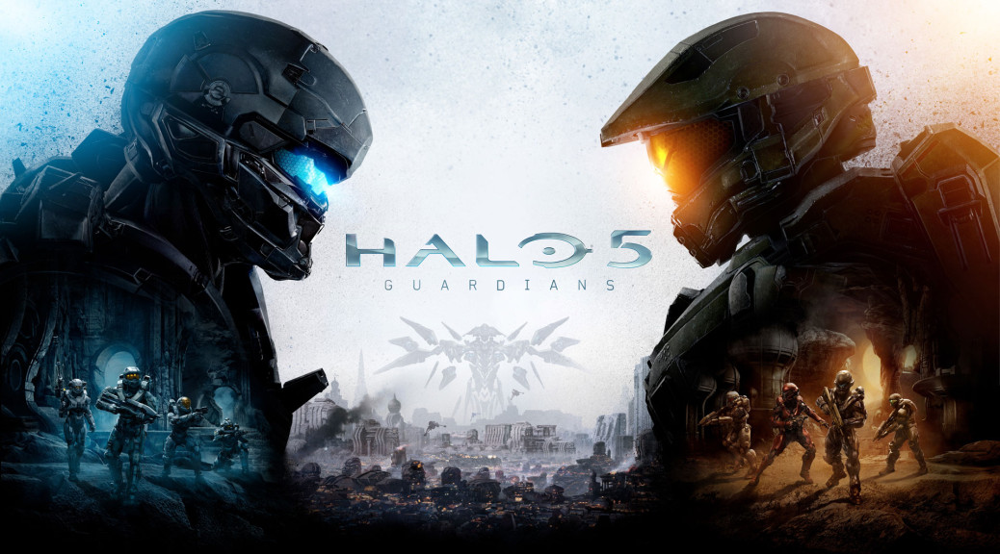
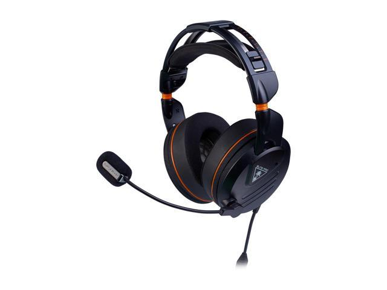
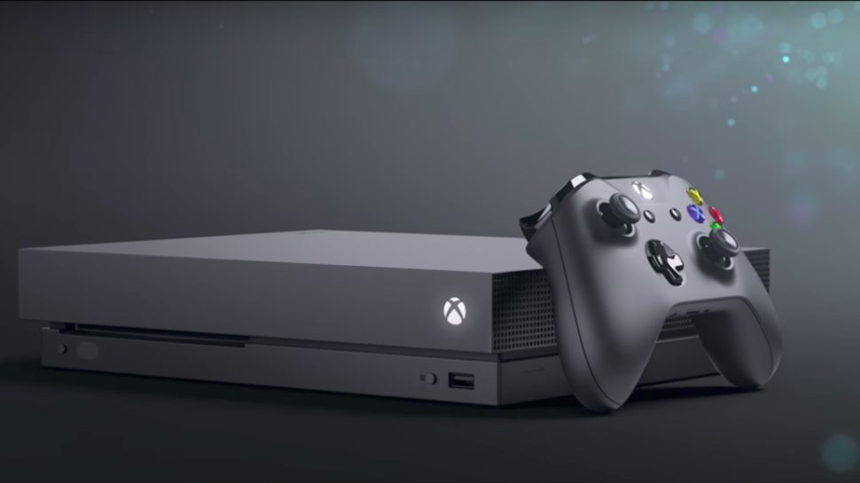

XBOX ONE

Assassin's Creed Origins
The game is set in Egypt near the end of the Ptolemaic period (49–47 BC) and recounts the secret fictional history of real-world events. The story explores the origins of the centuries-long conflict between the Brotherhood of Assassins, who fight for peace by promoting liberty, and The Order of the Ancients—forerunners to the Templar Order—who desire peace through the forced imposition of order.

Halo 5 Guardians (XBOX ONE Exclusive)
The game's plot follows two fireteams of human supersoldiers: Blue Team, led by Master Chief, and Fireteam Osiris, led by Spartan Locke. When the former goes absent without leave to track down the artificial intelligence construct Cortana, Master Chief's loyalty is called into question, and Fireteam Osiris is sent to retrieve him.

Turtle Beach Elite Pro Tournament Wired Gaming Headset
The Elite Pro is Turtle Beach’s latest gaming headset for console and PC crowds alike.
Turtle Beach has combined large 50mm drivers, a sturdy yet adjustable frame, and compatibility with pretty much any device – whether it’s a mobile phone, PC or console. The Elite Pro strikes a decent balance between features, design and sound quality, with impressive results.

Microsoft XBOX ONE X Console: 4K RESOLUTION
The Xbox One X is the most powerful games console you can currently buy. It represents a major performance boost over the Xbox One S and is geared towards people who want to see their games at the best quality possible on console.
4K is the name of the game, and this machine does a sterling job of serving up games at the fabled 3840 x 2160-pixel resolution.